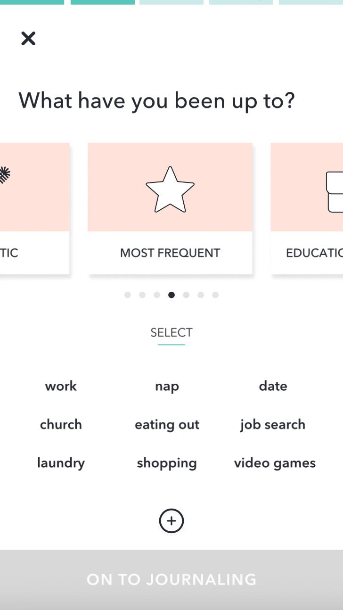

"Shower Thoughts" is a daily deep cleanse for your mind -- a mood tracking and journaling app utilizing Cognitive Behavioral Therapy principles. For this project, I worked on my own within a two-week design sprint.
Challenge
The goal of this project is to design an app that (1) focuses on a category of personal wellbeing, (2) pushes the user to commit to a healthier lifestyle, and (3) reflects a fresh, updated image.
I decided to focus on emotional wellbeing. While the market is already heavily saturated with apps focusing on physical health, emotional health is currently underrepresented in the app space despite this topic trending amongst millennials in recent years. Meanwhile, two-thirds of Americans diagnosed with depression don't get treatment, while those who do seek treatment wait years to get help and are often under-treated. Therefore, I was interested in designing a tool that could provide a way to cope, supplemental treatment, or even a preventative measure for those struggling with emotional wellbeing.
Approach
The first step was to break down the problem. Using a Lean UX Canvas, I drafted a few hypotheses along with corresponding business outcomes that could gauge the success of the app.
I researched potential competitors -- namely, the top (free) apps featured in this list I found in the App Store...
...and downloaded them all to test and compare their features.
While testing many of these apps, I felt overwhelmed by the amount of choices in tasks, features, and navigation. To differentiate my product, I would position it to feel more "guided" instead of "freeform" -- it should be as clear as possible to the user where to start and what to do. Additionally, the goal for many of these apps seemed to end with recording feelings, thoughts, or life events rather than pushing the user make progress in their wellbeing. There was a "blue ocean" when it comes to apps that both guided the user and helped the user to self-improve.
Discovery
The next step was to understand my target users -- in this case, busy millenials interested in improving their emotional wellbeing.
I interviewed 6 individuals to gather qualitative data on their current habits, motivations, and frustrations.
I also conducted a survey to gather quantitative data on my target users' goals, needs, and pain points -- and to confirm or reject any hypotheses from the start of the project. I would soon discover the importance of this step when the survey data I had gathered failed to support one of my initial hypotheses. An early assumption was that people struggling with emotional wellbeing would find relief or encouragement from positive, inspirational quotes. As it turns out, survey respondents tend to find "practical help or advice" most encouraging, followed by "feeling heard, a listening ear".
After synthesizing the data using an affinity diagram...
...I put a face to my insights by creating a user persona...
...and context for the user's main pain points by creating her journey.
Solution
During the ideation process, I considered how I might...
- ...make journaling like a therapy session?
- ...make mood and activity tracking feel more like self-care (and less like a chore)?
- ...keep the user focused while journaling?
I then prioritized my various feature ideas using the MOSCOW method, taking into consideration impact vs effort. From there, I determined what the minimum viable product would consist of.
Meanwhile, I also read up on evidence-based methods for managing depression and anxiety. Because my target users preferred practical help and advice, I believed my product would benefit them more if its tools could be backed up with empirical evidence. I then learned about Cognitive Behavioral Therapy -- a technique that has been shown to be just as effective as medication, with additional long-term results. Interestingly, CBT lends itself naturally to mood and activity tracking, as well as journaling, so I decided to incoporate CBT principles into my product.
Finally, I created the user flow to define the screens and actions needed for a user to complete their main goals of recording their mood, recording their activities, and journaling their thoughts, followed by an activity to challenge and re-write those thoughts using CBT principles.
Implementation
Lo-Fidelity
I made a quick paper prototype of my app's "happy path", but decided to pivot slightly by removing the "help with issue" user flow and instead adding a learning section after observing users hesitating when presented with three different options. While this streamlined the happy path, I also believed the new user flow would better equip users to act as their own therapist, rather than rely on the app to solve problems for them.
Mid-Fidelity
I iterated on my paper prototype with a wireframe one based on user feedback.
In this example, I added a carousel with six categories of activities. I had considered using a search bar instead, but I decided on this layout for two main reasons:
- Recognition (selecting activities from a list) requires less cognitive load compared to recollection (typing activities into a search bar).
- An important part of CBT includes incorporating various types of activities. As the user scrolls through the carousel, I wanted to aid the user to reflect more broadly on their day while also subtly reminding them to live more holistically.
Additionally, these categories could be useful in organizing and presenting user data as part of the statistics feature of the app.
I then conducted five usability tests. 100% stated that they liked the guided walk-thru of the happy path. One user said that he "felt taken care of" -- an encouraging reaction!
However, 100% also had trouble with this screen.
I decided I needed to include descriptive text to provide more clarity, and perhaps include onboarding in a future iteration.
Visual Design
This is the mood board
This is the style tile
This is the style guide. Color psychology - peach and teal are "calming" and "reassuring", while yellow and navy were "confident" and "reliable".
High-Fidelity
paginated carousel filter
sticky header because it's a lot of text
“I love how clean it looks. I’m all about that minimalism.”
I conducted desirability tests on the first hi-fi iteration by asking seven users to describe the app using five words from Jennifer Aaker's Brand Personality Framework.
- 100% described the prototype as "contemporary" or "up-to-date" -- success!
- 6/7 described it as "sincere" or "honest" -- not one of my original brand attributes, but I'll take it.
- 4/7 described it as "cheerful" -- while I wanted the app to be "friendly", I felt that "cheerful" could potentially read too aggressive to users who may not be in a positive mood while using the app. I decided to tone it down by changing a couple of the particularly cheerful illustrations. My next step would be to A/B test the app with these new illustrations to check if I had indeed succeeded.
Check out the interactive prototype below:
Next Steps
Persevere
- Continue to test Hi-Fi and iterate
- Create onboarding screens to briefly explain CBT and the value of journaling
- Build out other main features (stats, learn)
- Consider microinteractions (Create, Read, Update, Delete) for all user input
- Track logins, NPS, and membership metrics to determine whether or not the app is a success.
Thanks for reading! Feel free to check out my other projects: